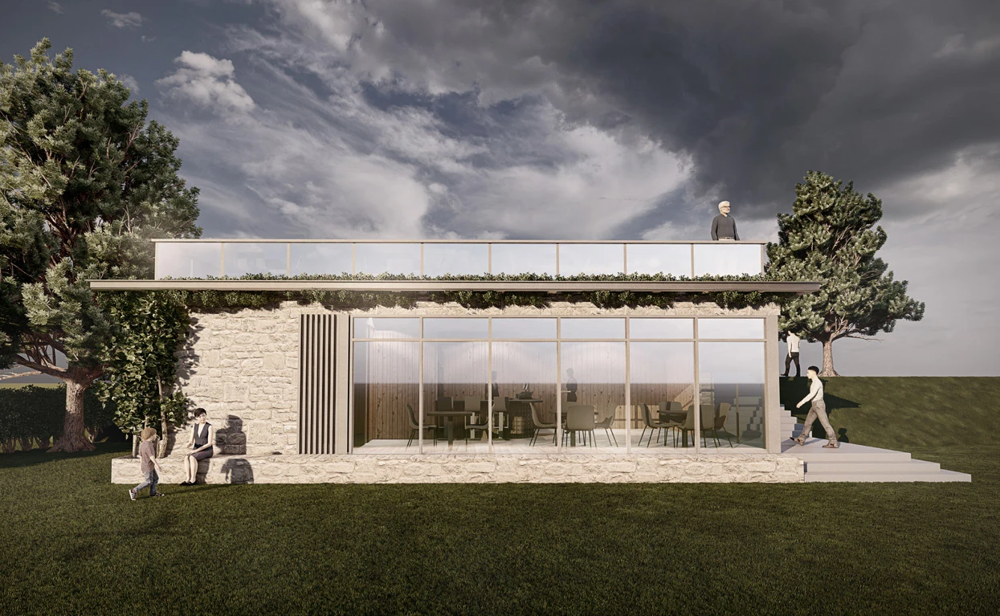

Architecture portfolio
Color theme
Dark
Light
Hamz Dar
Download portfolio
Portfolio
PDF
(Alter)native approaches

Café at Hillpark
Murs à pêches
Raum für Alltag
Just Wallpaper
Deine Gunst der Kunst
Studio Catalyst
Haus der Photographie